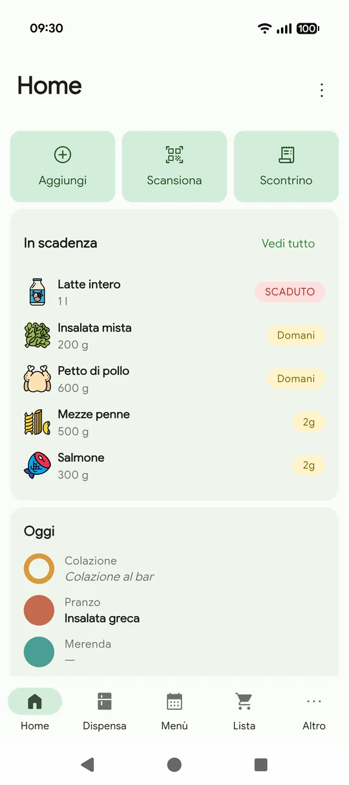
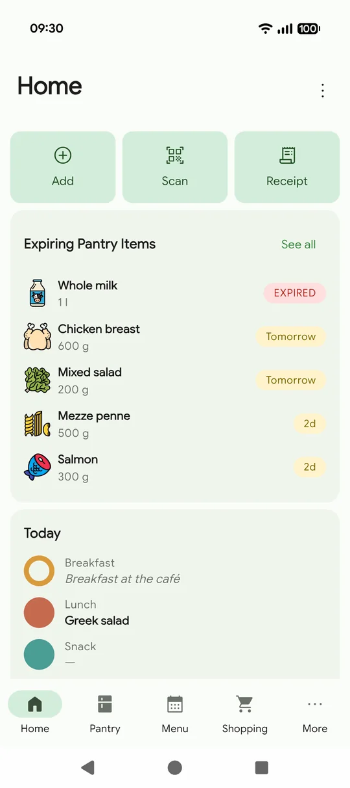

DispensaPantry
Sai cosa scade prima che scadaKnow what expires before it expires
La home si apre su quello che sta per andare a male, così il barattolo in fondo al frigo diventa la cena di stasera invece della spazzatura del mese prossimo.Your home screen leads with what is about to go off, so the jar at the back of the fridge becomes tonight's dinner instead of next month's bin.

